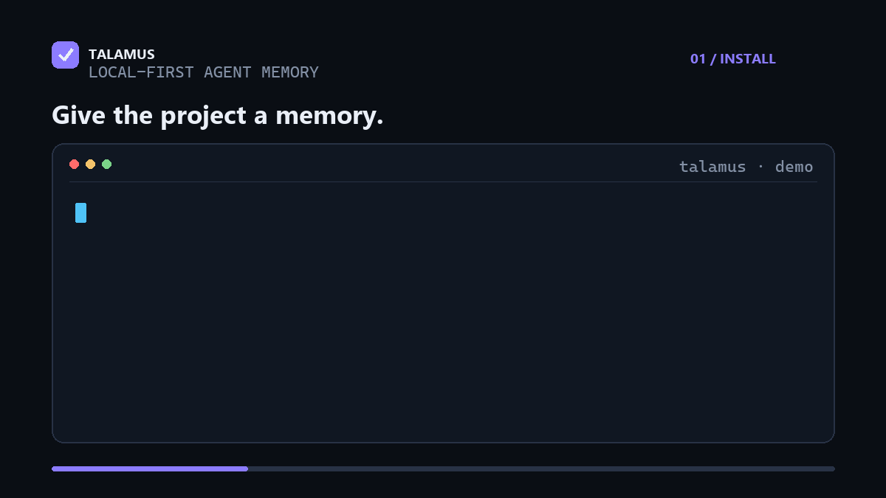

Engineering case study: Talamus
Can an AI agent retain durable, cited, time-aware memory without giving a hosted service ownership of the user's context?
- Role: Creator and lead engineer — Giovanni “Angio” Crapuzzi
- Project: Talamus, under the Ampres open-source project
- Period: May 2026–present
- Primary stack: Python 3.11+, SQLite/FTS5, MCP, TypeScript/React, GitHub Actions

The problem
Coding agents are effective inside one session but usually lose the reasoning behind decisions when it ends. Many memory approaches add a hosted account, remote database, required embeddings, or an opaque store that users cannot inspect and correct directly.
I created Talamus to explore another design: keep durable memory in ordinary files, make answers traceable to sources, preserve how facts change, and expose consistent behavior to humans and agents. The result is a local-first Python application with a CLI, SDK, MCP server, and optional React workbench.
My work spans product definition, architecture, retrieval, temporal and provenance models, agent integrations, evaluation, security, documentation, and release automation. The repository history links this work to my GCrapuzzi account.
Constraints that shaped the design
Four constraints are documented in the design principles:
- The core works without a hosted service, vector database, or required embedding API.
- User-editable Markdown is the human source of truth; indexes are rebuildable.
- Multi-call LLM operations show an estimate and require explicit consent.
- Retrieval changes are measured on multiple corpora, with negative results retained.
Three engineering decisions
1. Separate human truth from derived machine state
A Talamus brain stores notes as Obsidian-compatible Markdown. Provenance, relations, retrieval text, and structured fields live in canonical JSON records. SQLite/FTS5, JSON postings, graph data, domains, and ontology files are derived caches.
This hybrid model lets people edit and back up meaningful content with normal
filesystem tools while preserving machine metadata. talamus reindex merges
human edits and rebuilds the indexes. Deleting the cache does not delete the
notes. The model and migration behavior are specified in the
architecture document.
2. Build retrieval without required embeddings
Plain retrieval blends field-weighted BM25 with character trigrams over titles, aliases, summaries, and bilingual retrieval text. Trigrams provide a lightweight bridge for cognates and cross-language queries. At answer time, an optional user-selected LLM can expand a question into corpus vocabulary; it is not required for local search.
The ask pipeline routes by stable domain identifiers, ranks through the persistent index, retains global escape-hatch results for routing errors, fits evidence to a context budget, and requires citations. Shared services support the CLI, MCP interface, SDK, and workbench, reducing behavioral drift between front ends.
3. Treat time and provenance as first-class data
Talamus keeps note versions and fact-validity records append-only. A correction
closes the old validity window and opens a new one instead of deleting the
past. Superseding information becomes the default for current answers, while
--as-of, history, and timeline operations retain earlier states.
Notes record source locators and content hashes. Verification compares a note with preserved source material and sends uncertain corrections to a review queue rather than applying them silently. “What did the system know then?” and “what evidence supports this answer?” are therefore data-model concerns, not presentation features.
files, URLs, repositories, consented sessions
│
▼
extraction + provenance
│
┌───────────┴───────────┐
▼ ▼
human-editable Markdown canonical machine records
│ │
└───────────┬───────────┘
▼
rebuildable FTS5 / graph / ontology
│
▼
cited recall through CLI, MCP, SDK, UI
Evidence and quality controls
The benchmark guide links public numbers to committed result artifacts. The one-screen comparison records recall@10 of 0.797 and nDCG of 0.664 on English SciFact, and hit@10 of 0.971 with recall@10 of 0.929 on the cross-language book corpus. The documentation also reports cases where a dense multilingual model ranks better with a weak expansion engine. Losses stay visible because the benchmark is an engineering control, not a marketing leaderboard.
CI runs linting, formatting, type checking, and the full unittest suite on Linux, macOS, and Windows across Python 3.11–3.13. Optional UI and PDF dependencies have an all-extras job. MCP SDK 1.x compatibility is tested explicitly while the default dependency range supports 2.x.
The release workflow reruns the quality gate, builds the wheel and source archive, records their hashes in a commit-bound manifest, and verifies those assets before trusted publication to PyPI and the official MCP Registry. It fails closed on tag, version, or artifact mismatches.
Security, trade-offs, and current work
The security policy defines concrete local threats: browser access to the workbench, malicious ingested content, prompt-injected agents using MCP writes, and same-machine users. Tests cover host and origin checks, traversal, symlink exfiltration, zip-slip, and secret redaction.
The same document keeps unresolved debt public. Current work includes owner-only saved credentials, read-only MCP defaults, PDF/DOCX secret detection, and sub-100 ms search at 100k notes. These limitations matter because local-first software moves operational responsibility onto the user's machine.
A recent maintenance example was the MCP Python SDK 2.0 API change. Instead of excluding the new major version, the server resolves maintained 1.x and 2.x APIs through a compatibility boundary and handles their HTTP configuration differences explicitly. A dedicated 1.x CI job guards backward compatibility.
Outcome
Talamus is a public Apache-2.0 project with versioned releases, reproducible documentation, a typed Python core with no mandatory runtime dependencies, optional agent and UI integrations, and traceable release artifacts. It records how I approach engineering: state constraints before implementation, keep user data inspectable, measure changes, expose known debt, and make operational behavior reproducible.